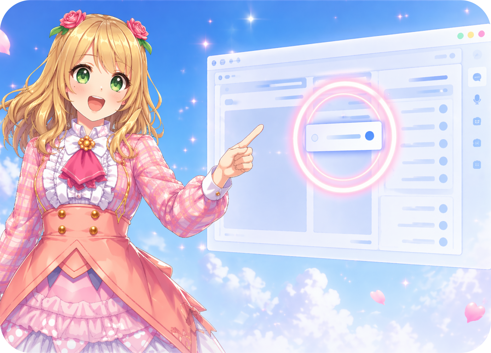

She points at things.
ポインティング
Ask a question about whatever's on your screen and she draws a little circle around the exact thing you meant. No explaining, no coordinates, no "the third button from the right."
works across every monitor you own.